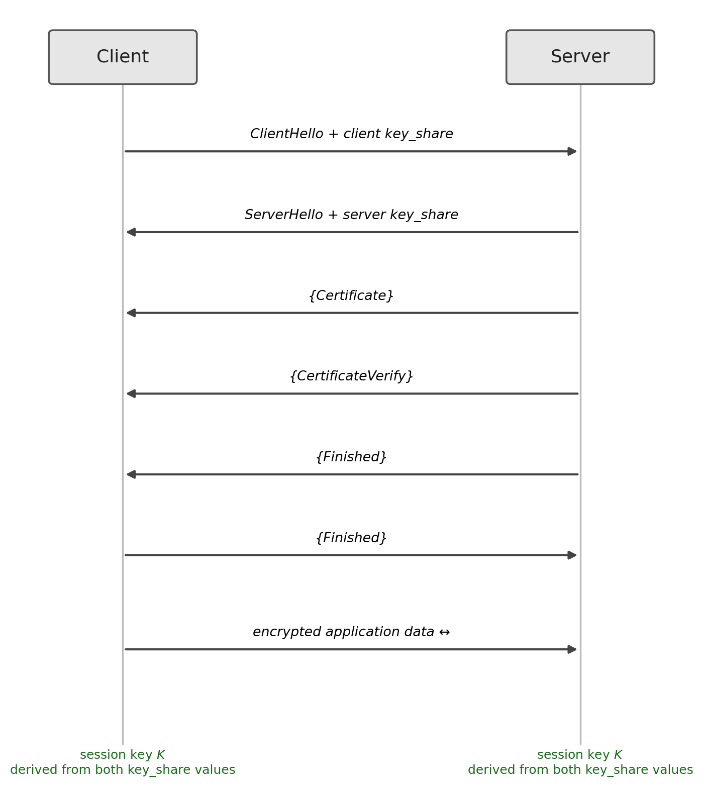
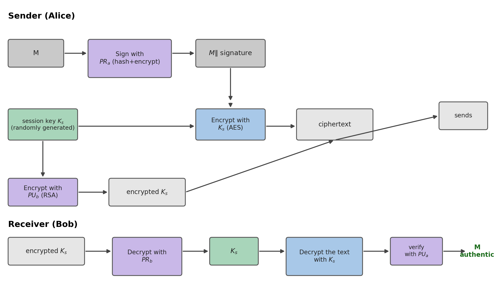

10 TLS and PGP
Introduction
This chapter shows how the tools presented throughout the book, symmetric ciphers, hash functions, MACs, RSA, Diffie-Hellman, elliptic curves and X.509 certificates, combine into two widely used real-world protocols: TLS, which protects practically all of today’s web traffic, and PGP, one of the first widely deployed cryptographic systems for electronic mail. Other schemes of practical interest, as they are incorporated into the course unit’s syllabus, will naturally find their place here.
10.1 TLS: Goals and Layers
TLS (Transport Layer Security), the successor to SSL, protects a network connection on three fronts: confidentiality (the data exchanged cannot be read by third parties), integrity (it cannot be altered without detection), and authentication (at least the server, typically through an X.509 certificate, proves its identity) (Stallings 2020; Rescorla 2018). The protocol is organised into two layers: the handshake protocol, which negotiates the session parameters and establishes a shared key, and the record protocol, which uses that key to encrypt and authenticate all subsequent traffic with an AEAD construction, such as AES-GCM or ChaCha20-Poly1305 (chapters 3 and 4).
10.2 The TLS 1.3 Handshake
TLS 1.3 (Rescorla 2018) significantly simplified the handshake process relative to earlier versions, reducing it to a single round trip (1-RTT) in the general case:

The client starts with a ClientHello, which already includes a key-share value (key_share), typically an elliptic curve point for ECDH (Section 8.5). The server responds with its own ServerHello and key_share, allowing both sides to immediately derive a common session key, exactly as in Section 8.5. The server also sends its X.509 certificate (Section 9.3) and a signature over the handshake transcript, proving that it holds the corresponding private key; both sides finish by confirming, through an authenticated Finished message, that they arrived at the same key. From this point on, all communication proceeds encrypted and authenticated by the record layer.
One design detail of TLS 1.3 is worth highlighting: each side’s key_share value is generated afresh, ephemerally, in every handshake, and is never reused from one session to the next. This property is called forward secrecy: even if the server’s long-term private key (the one that signs the CertificateVerify) is compromised in the future, that key never directly participated in deriving the session key, it only authenticated the ephemeral value exchanged in that specific handshake. Compromising the long-term key allows an attacker to impersonate the server from that point onward, but not to decrypt past sessions that have already ended and been discarded.
10.3 Modern Ciphers in TLS
A cipher suite in TLS 1.3 specifies the AEAD algorithm and the hash function used to derive keys and authenticate the handshake. The two combinations dominant in current practice have both already been presented in this book:
TLS_AES_128_GCM_SHA256: AES in GCM mode (Section 3.6) with SHA-256 (Section 5.3), benefits from hardware acceleration (AES-NI) on the vast majority of modern processors.TLS_CHACHA20_POLY1305_SHA256: ChaCha20-Poly1305 (Section 4.5) with SHA-256, preferred on devices without hardware acceleration for AES, such as many mobile phones, for exactly the performance reason already discussed in Chapter 4.
10.4 PGP: Hybrid Encryption for Electronic Mail
PGP (Pretty Good Privacy), and its standardised successor, OpenPGP (Callas et al. 2007), solves a different problem from TLS: protecting a message that does not follow a real-time connection, such as an email, between a sender and a recipient whose public keys are already known (Martin 2017). The construction combines symmetric and asymmetric encryption, drawing on the speed of the former and the convenience of the latter:

On the sender’s side: the message \(M\) is first signed (hashed and then encrypted with the sender’s private key, as in Section 7.4); the result is encrypted with a session key \(K_s\), generated at random and used only once, via a fast symmetric cipher; and that session key, in turn, is encrypted with the recipient’s public key, using RSA. What is transmitted is the pair (ciphertext, encrypted session key). On the receiver’s side, the process is reversed: the recipient’s private key decrypts \(K_s\), which decrypts the text, revealing the message and the signature, which is finally verified with the sender’s public key.
A fundamental difference from the model in Chapter 9 lies in the trust model: instead of a CA hierarchy, PGP rests on a web of trust, in which each user signs the public keys of others they trust directly, and trust propagates in a decentralised fashion through this network of signatures (Stallings 2020).
10.5 Chapter Summary
This chapter combined the tools from previous chapters into two real systems:
- TLS protects a network connection by combining a handshake, which negotiates a session key (typically via ECDH), with a record protocol, which encrypts traffic with an AEAD construction
- TLS 1.3 reduced the handshake to one round trip (1-RTT), authenticating the server through an X.509 certificate and the corresponding signature; the key-share value is generated ephemerally in each session, guaranteeing forward secrecy
- Modern cipher suites use AES-GCM or ChaCha20-Poly1305, depending on whether hardware acceleration is available
- PGP protects asynchronous messages, such as email, with a hybrid cipher: the message is encrypted with a symmetric session key, and only that key is encrypted with RSA; trust is organised as a decentralised network, not a CA hierarchy
10.6 Discussion Question
The forward secrecy of TLS 1.3 (Section 10.2) guarantees that compromising the server’s long-term private key does not allow past sessions to be decrypted, because the session key never depended directly on it. PGP (Section 10.4) works quite differently: the recipient’s public key directly encrypts the session key \(K_s\) of each message, always using the same long-term RSA key pair. Given this, what consequence does the eventual future discovery of a recipient’s long-term private key have for PGP messages already sent in the past, and precisely how does this situation differ from the guarantee offered by TLS 1.3?